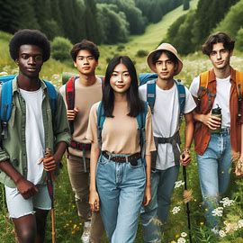

O que é a migração rural-urbana?
A migração rural-urbana refere-se ao movimento de pessoas do campo para áreas urbanas em busca de melhores oportunidades de emprego, educação e qualidade de vida. Este fenômeno é impulsionado por vários fatores, incluindo a busca por melhores condições de vida e a crescente industrialização das áreas urbanas.
Historicamente, a migração rural-urbana tem sido uma característica importante do desenvolvimento econômico e social. Nos últimos anos, as taxas de urbanização têm aumentado globalmente, e muitos jovens estão liderando esse movimento em busca de novas oportunidades.
Os jovens frequentemente migraram para cidades devido à promessa de melhores perspectivas educacionais e de carreira. No entanto, essa mudança também traz desafios significativos que precisam ser abordados para garantir uma transição bem-sucedida.
Desafios enfrentados pelos jovens migrantes
Os jovens migrantes enfrentam uma série de desafios ao se mudarem para áreas urbanas. Alguns dos principais desafios incluem:
- Falta de infraestrutura básica: Muitas áreas rurais carecem de infraestrutura adequada, o que pode ser um desafio ao se adaptar a um ambiente urbano.
- Dificuldade de acesso à educação de qualidade: Embora as cidades ofereçam melhores oportunidades educacionais, o acesso a essas oportunidades pode ser limitado para novos migrantes.
- Desafios de adaptação ao ambiente urbano: A transição do campo para a cidade pode ser difícil devido às diferenças culturais e ao ritmo de vida acelerado.
- Conflitos de identidade cultural: Jovens migrantes podem enfrentar dificuldades para manter sua identidade cultural enquanto se ajustam à nova cultura urbana.
Além desses desafios, muitos jovens enfrentam questões como a falta de suporte social e a dificuldade de encontrar moradia acessível. Esses fatores podem complicar ainda mais a adaptação à vida na cidade.
Oportunidades para os jovens migrantes
Apesar dos desafios, a migração para áreas urbanas também oferece várias oportunidades para os jovens. Entre as principais oportunidades estão:
- Acesso a empregos formais: As cidades oferecem uma variedade de oportunidades de emprego em diferentes setores, permitindo que os jovens explorem diversas carreiras.
- Melhores serviços de saúde e educação: As áreas urbanas geralmente possuem melhores recursos e serviços em comparação com as áreas rurais.
- Participação em novas experiências culturais e sociais: A vida urbana oferece oportunidades para os jovens participarem de eventos culturais, sociais e comunitários.
- Contribuição para o desenvolvimento econômico: Os jovens migrantes podem contribuir para o crescimento econômico das cidades através de suas habilidades e inovação.
Essas oportunidades podem ajudar os jovens a desenvolver habilidades valiosas e construir um futuro promissor. No entanto, é crucial que políticas públicas sejam implementadas para apoiar essa transição e garantir que os benefícios sejam maximizados.
Programas de apoio e mentoria para jovens migrantes podem facilitar a integração e proporcionar suporte adicional durante a adaptação. Tais iniciativas podem incluir orientação profissional, suporte educacional e redes de apoio social.
Soluções para a Migração Rural-Urbana
Para enfrentar os desafios da migração rural-urbana e maximizar as oportunidades para os jovens migrantes, diversas soluções podem ser implementadas:
- Desenvolvimento de políticas públicas: Criar políticas que abordem diretamente as necessidades dos migrantes, como habitação acessível e programas de integração.
- Investimento em infraestrutura: Melhorar a infraestrutura urbana para acomodar o crescimento populacional e fornecer serviços básicos adequados.
- Programas educacionais e de treinamento: Oferecer programas educacionais e de treinamento que preparem os jovens para o mercado de trabalho e ajudem na adaptação cultural.
- Suporte comunitário: Fomentar redes de apoio comunitário que ajudem os migrantes a se integrar e encontrar suporte social e profissional.
Iniciativas de colaboração entre governos, ONGs e setores privados são essenciais para criar um ambiente urbano mais inclusivo e acolhedor para os jovens migrantes.
Conclusão
A migração rural-urbana é um fenômeno complexo que afeta milhões de pessoas ao redor do mundo, especialmente os jovens. Compreender seus desafios e oportunidades é essencial para criar políticas públicas que apoiem uma transição suave e benéfica para todos os envolvidos.
Para garantir uma integração bem-sucedida dos jovens migrantes, é fundamental que governos, organizações e comunidades trabalhem juntos para oferecer suporte e criar ambientes inclusivos que favoreçam o crescimento e o desenvolvimento.
Ao enfrentar os desafios e aproveitar as oportunidades, os jovens podem transformar suas vidas e contribuir significativamente para o desenvolvimento das cidades para as quais se mudaram.